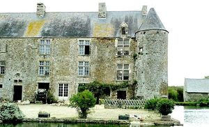
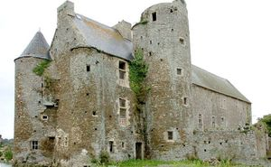
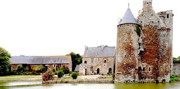
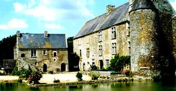
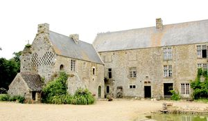
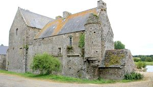

Recensement Jean-Claude Truffet
| Département | 50 — Manche |
| Canton | Saint-Lô-d |
| Commune | Saint-Lô-d |
| Type d'édifice | Château |
| Période d'origine | XV |






PARC, le toponyme, le Parc suggère lexistence dun parc seigneurial à lépoque médiévale. Lactuel domaine du Parc dOurville, pour sa plus grande partie, était le Parc seigneurial du château dOlonde. Il en aurait été détaché pour constituer le domaine réservé dun nouveau fief noble crée au profit dun cadet de famille. Ce démembrement qui a pu avoir lieu entre 1205, année où Philippe-Auguste, nouveau maître de la Normandie, donna Olonde à son fidèle serviteur Richard dArgences et 1220, année où le registre des fiefs de Philippe-Auguste nous apprend que Guillaume dArgences tenait la quatrième partie dun fief de chevalier prés dOlonde. Le plus ancien aveu du roi pour le fief du Parc mentionne que son possesseur doit au roi le service, au château du Plessis, dun homme armé durant dix jours. Collibeaux de Criquebeuf rendit aveu au roi pour le Parc dOurville, le 14 novembre 1403. Il était membre de la célèbre famille dEstouteville. Henri V dAngleterre confisqua le fief du Parc et le donna à Jehan dArgouges à cause de la rébellion de Collibeaux de Criquebeuf. Le 31 août 1429, un accord passé entre Jean dArgouges et Thomas de Clamorgan fut confirmé à Vernon par loncle du roi Henry V dAngleterre, Jean, régent du royaume de France et duc de Bedford. Par cet accord, Jean dArgouges quitta, transporta et délaissa le fief du Parc à Thomas de Clamorgan, son beau-frère. En 1436, il fut maintenu dans la possession de ses biens propres par le roi de France Charles VII, mais tenu de restituer à leur anciens propriétaires les biens que les anglais lui avaient concédés. Cependant il était encore seigneur du Parc en 1438, année où il rendit aveu pour ce fief. En cette même année 1438, il est dit seigneur du Parc dans un document concernant les salines de Portbail.
PARC, le fief du Parc fut restitué aux enfants de Collibeaux de Criquebeuf : Simon dEstouteville, seigneur de Criquebeuf, Chamelles, Missy, Brucourt, du Han, dAnneville et du Parc et Perrette dEstouteville, dame de Criquebeuf, Chamelles, Missy, Brucourt, du Han, dAnneville et du Parc. Perrette dEstouteville, dame du Parc et autres lieux, épousa Richard de la Rivière, seigneur de Gouvis. Plusieurs membres de cette famille se sont distingués dans les armées du roi de France pendant la guerre de Cent-Ans. Bertran de la Rivière, fils de Richard et de Perette dEstouteville, seigneur du Parc, Anneville, Criquebeuf, la Fère, Missy et Saint-Germain du Crioult, fut reconnu noble à Ourville (Saint-Lô dOurville) par Montfaut en 1463. Il épousa Jeanne de Briqueville, fille de Roger, seigneur de Laune. Leur fils, Jacques de la Rivière, seigneur du Parc et Anneville, épousa Marguerite du Mesnildot. François de la Rivière, seigneur du Parc (aveu du 15 avril 1514) qui produit sa généalogie le 14 juillet 1523 à Valognes. Le 4 Brumaire an VII (25 octobre1798) vente du Parc par Anne Eustache Rose Charlotte Osmond, veuve de M. le marquis de Sainte-Suzanne, demeurant à Golleville, à M. Jean François Coquoin, magistrat, demeurant à Bricquebec. (En réalité, le marquis avait émigré, ils divorcèrent pour les besoins de la cause et se remarièrent en 1802). Aujourd'hui c'est un ensemble architectural médiéval unique à découvrir : un ensemble défensif exceptionnel.
Éléments protégés MH : le corps de logis principal avec son aile en retour, en totalité ; l'ensemble défensif à l'ouest du logis ; les façades et les toitures du pressoir et du moulin ; la chapelle, en totalité ; dans la basse-cour : les façades et les toitures de la grange, des communs ouest et des deux charretteries, ainsi que le porche ; les douves, le vivier et le jardin fossoyé : inscription par arrêté du 27 novembre 2000.
Divers seigneurs
"
Château du Parc à St-Lo d'Ourville Gps 49° 06' 41? N, 1° 06' 26? Ouest